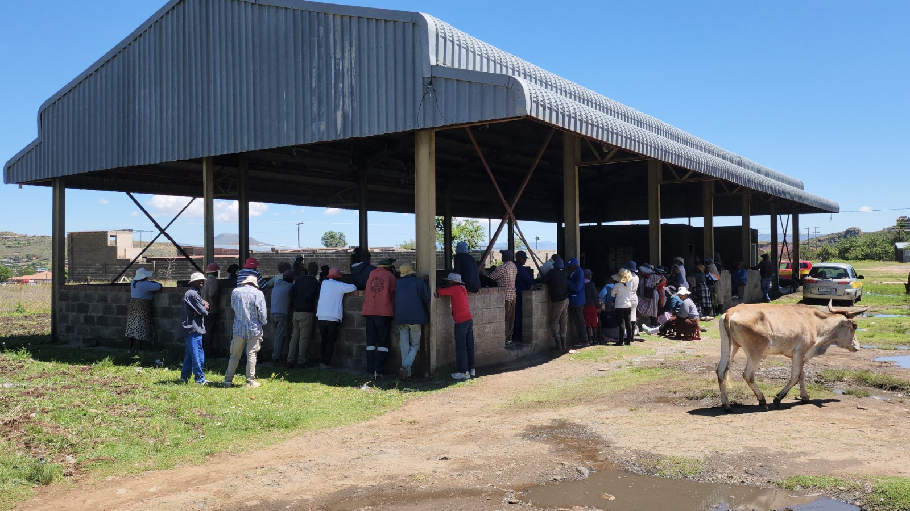

AI & Research
AI-Powered Extension for Agricultural Resilience
Harnessing AI to improve extension worker services for smallholder farmers. Developing an AI-powered Decision Support System using RAG technology to provide context-specific insights from Lesotho's ReNOKA Compendium for soil and water conservation.
Innovation: AI decision support • RAG technology • Sesotho translation • RLHF feedback loop
Research Partner: University of Virginia | Collaboration with National University of Lesotho